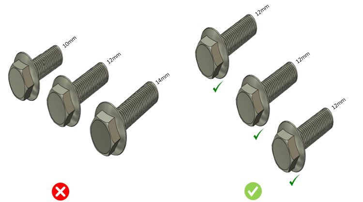
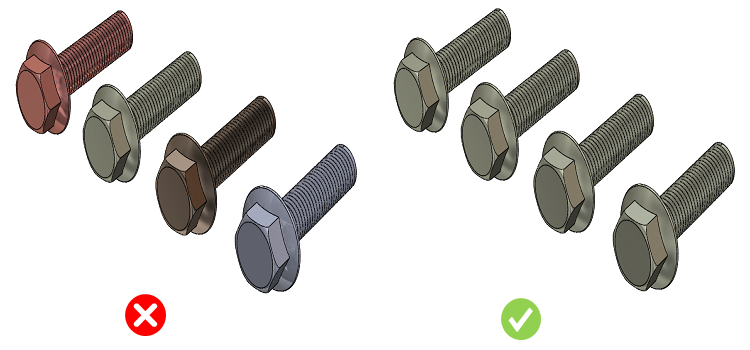
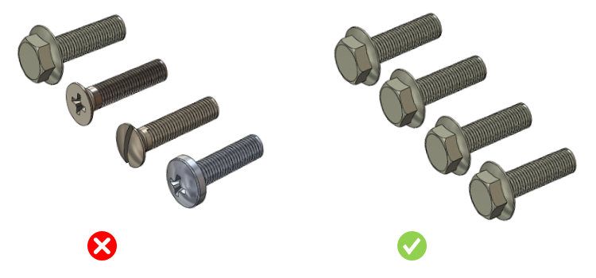
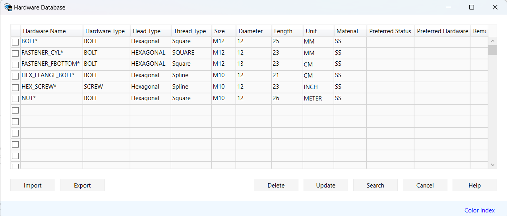

同じ直径のボルトおよびねじについては、ヘッド形状・材質・長さを統一することを推奨します。
もしくは
同一径のボルトおよびねじでは、長さのバリエーションを抑えるため、隣接する長さの差をユーザー設定値以上とすることを推奨します。
異なる径のボルトおよびねじについて、連続する径の差がユーザー設定値未満の場合、違反として検出されます。
締結部品（留め具／ハードウェア）の合理化は、部品点数削減、調達効率向上、在庫管理の簡素化につながり、結果として組織に大きなコスト削減効果をもたらします。
アセンブリ内に長さの近い締結部品が複数存在する場合、長さの種類を削減し、同一長さの締結部品へ置き換えることが可能です。これにより、締結部品の標準化が進み、調達・在庫・組立の効率向上につながります。
ヘッド形状の最適化は、締結部品の合理化を進める有効な手段です。用途上問題がなければ、アセンブリ全体で同一のヘッド形状を採用することで、工具の共通化や作業手順の簡素化が可能となり、作業時間、工数、コストの削減に寄与します。
アセンブリ設計の初期段階でこのような締結部品を特定し、合理化のための適切な対応を行うことで、後工程での手戻りを防ぎ、組立コストを大幅に低減することが可能です。
ボルト・ねじの標準化・合理化
一般的な指針として、全体的な組立コストを削減するために、ボルトおよびねじの種類のばらつきは避けるべきです。
「トップレベル」または「全レベル」の選択に基づき、DFMPro はアセンブリ内に存在するボルトおよびねじを特定し、それらを検証に使用します。
DFMPro は、同一径・同一ヘッド形状・同一材質のボルトおよびねじについて、連続する長さのばらつきをチェックします。
DFMPro は、ユーザー設定値に基づき、ボルトおよびねじの径のばらつきをチェックします。
ユーザーは、デフォルトで設定されている値を編集できます。
ケース A: 同一径・同一ヘッド形状・同一材質のボルトおよびねじについては、長さを統一するか、または隣接する長さの差がユーザー設定値以上となるように合理化する必要があります。
合理化されたボルト・ねじの長さタイプ

合理化されたボルト・ねじの材質タイプ

合理化されたボルト・ねじのヘッドタイプ

ユーザーは、ルール構成で Ctrl+I コマンドを使用して、Excel シートテンプレートからハードウェアデータを一括でインポートできます。データがインポートされると、DFMPro ハードウェアデータベースで利用できるようになります。
ハードウェアを構成するには、ハードウェアデータベース を参照してください。
標準テンプレート形式:
|
P1 |
H1 |
H2 |
T |
D |
L |
M |
S |
P2 |
R |
|
Fastener_1 |
WASHER |
Circular |
M3 |
|
5 |
SS |
N |
Fastener_4 |
|
|
Fastener_2 |
NUT |
Hexagonal |
M10 |
|
25 |
SS |
Y |
|
|
|
Fastener_3 |
BOLT |
Hexagonal |
M12 |
|
30 |
SS |
N |
|
|
P1 = ハードウェア名
H1 = ハードウェアタイプ
H2 = ヘッドタイプ
T = ねじ
D = 直径
L = 長さ
M = 材質
S = 推奨ステータス
P2 = 推奨ハードウェア
R = 備考
注記:
必須フィールドは、Hardware Name、Hardware Type、Head Type、Material、Diameter、および Length です。
